Black numbers on the map represent the location of where the photos were taken. Click links above to view the photographs.
Orange numbers are located at every 1 kilometre mark and represent the approximate location of each of the 8 pages
Charade (Page 8 of 8)
|| Contents || Page 1 | Page 2 | Page 3 | Page 4 | Page 5 | Page 6 | Page 7 | Page 8 || Home ||
Black numbers on the map represent the location of where the photos
were taken. Click links above to view the photographs.
Orange numbers are located at every 1 kilometre mark and represent the approximate
location of each of the 8 pages
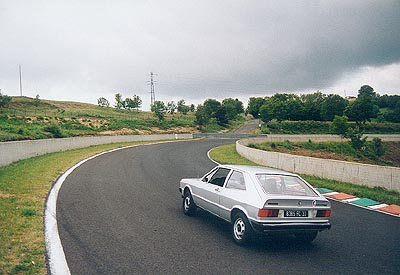
#091
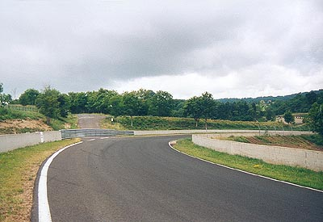
#092 - Tertre de Thèdes: Now, the track is going downhill and sharpening at into
the second apex! Note the old public road to the village of Thèdes going straight on.
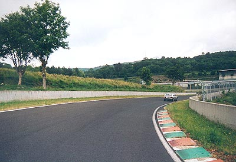
#093
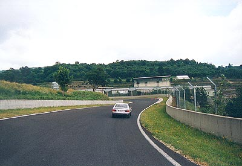
#094
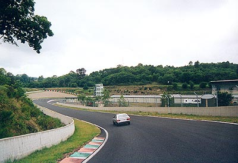
#095
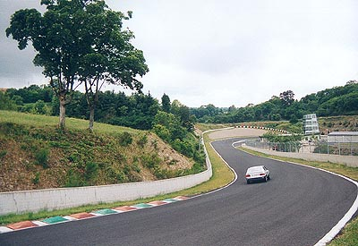
#096
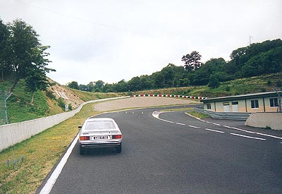
#097 - Virage Louis Rosier: The famous french driver was also the one who
"discovered" the track. This curve is difficult because the exit is very sharp!!
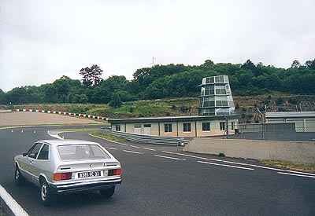
#098 - Pitlane entrance is to the right
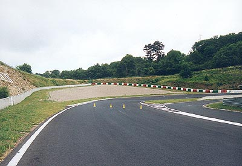
#099
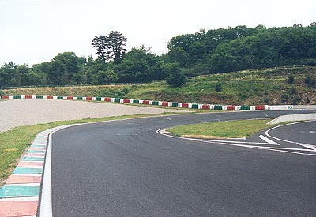
#100 - Entry of Virage Rosier. At this place, a memorial to Louis Rosier was
located just outside the track (he died before seeing the first race in Charade...)
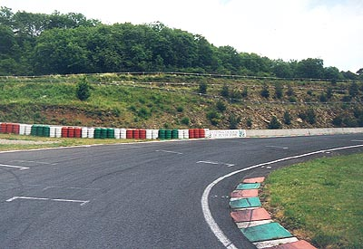
#101
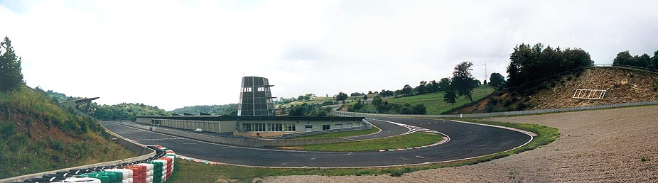
View of Virage Rosier
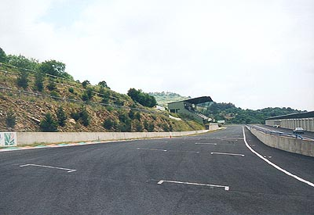
#102
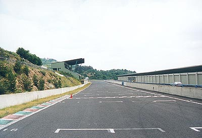
#103
Photographs
and Map ©Franck RIVE. Reproduced here with kind permission.
Photographs of the present circuit were taken with kindly permission of the
track’s director.